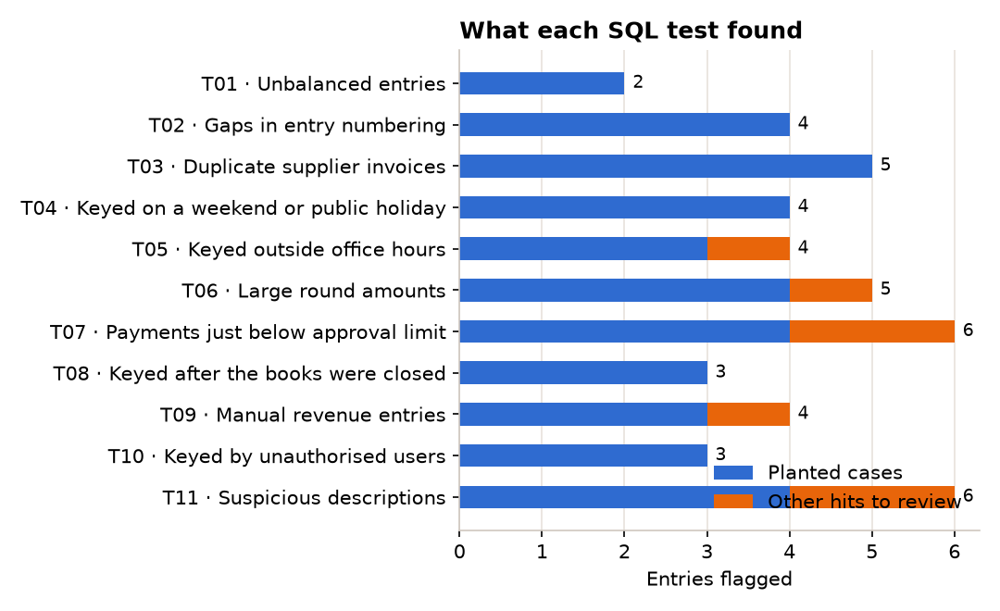

SQLSQLitePythonAudit
Journal entry testing: from 4,466 entries to five decisions
The questionEvery financial audit tests journal entries for fraud and error. Which entries of a company's general ledger deserve a closer look, and what should management do about them?
Objectives- Run 11 audit tests (ISA 240) on a full ledger in one pass
- Keep every threshold in one parameter table, nothing hard-coded
- Rank entries by risk so the review starts with the worst
- Prove the tests work against 30 anomalies planted on purpose
30 / 30planted anomalies detected
−99%review workload (33 entries)
€85kmanual revenue flagged
0.5 sto rerun the 11 tests
Decision Do not sign off the accounts until the CFO's €85,450 of year-end manual revenue and the €70,165 of profit added after closing are supported, and lock the period in the ERP.
What the query returns

src/plot_results.py from the query results